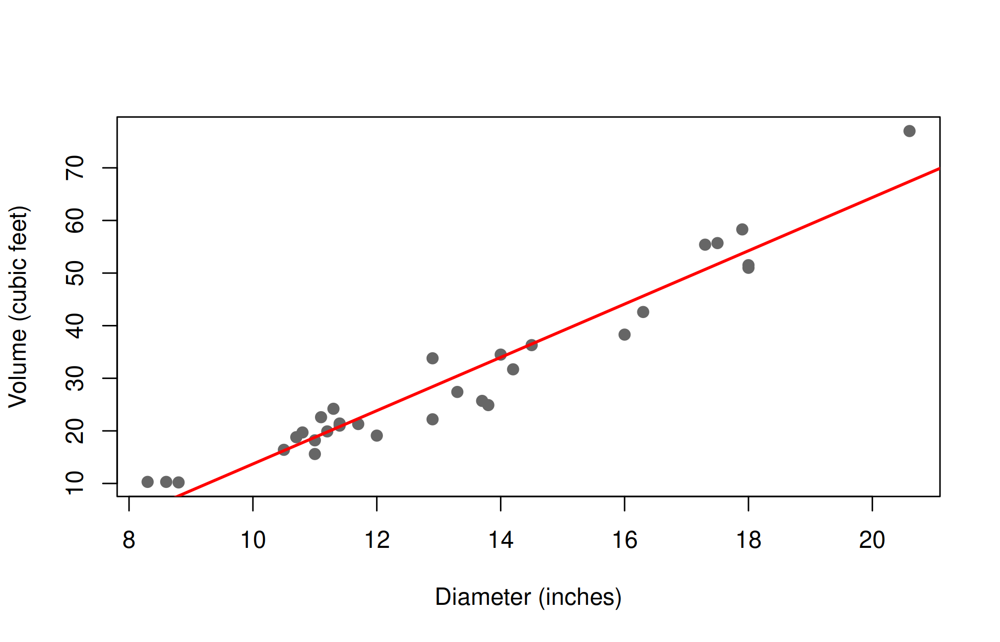

Compute and test simple, rank and partial correlations, fit simple and multiple linear regressions, read the lm() output, make predictions, check diagnostics and multicollinearity, and select predictors.
Correlation measures the strength of the linear association between two variables, treating them symmetrically. Regression describes how one variable (the response, \(y\)) depends on one or more others (the predictors, \(x\)), and is used for prediction.
We use the built-in trees data: the diameter (labelled Girth, in inches, measured at 4 ft 6 in above the ground), height (ft) and timber volume (cubic ft) of 31 felled black cherry trees. Estimating the volume of a standing tree from easily measured diameter and height is a classic problem in forestry.
Spearman's rank correlation rho
data: Height and Volume
S = 2090, p-value = 0.0006
alternative hypothesis: true rho is not equal to 0
sample estimates:
rho
0.5787
The simple correlation between height and volume is 0.60, but once diameter is held constant it falls to 0.44: part of the association between height and volume arises because taller trees also tend to be thicker.
Warning
Correlation does not imply causation, and a correlation coefficient describes only linear association. Always look at the scatter plot: two variables with a strong curved relationship can have \(r\) close to zero.
fit1 <-lm(Volume ~ Girth, data = trees)summary(fit1)
Call:
lm(formula = Volume ~ Girth, data = trees)
Residuals:
Min 1Q Median 3Q Max
-8.065 -3.107 0.152 3.495 9.587
Coefficients:
Estimate Std. Error t value Pr(>|t|)
(Intercept) -36.943 3.365 -11.0 7.6e-12 ***
Girth 5.066 0.247 20.5 < 2e-16 ***
---
Signif. codes: 0 '***' 0.001 '**' 0.01 '*' 0.05 '.' 0.1 ' ' 1
Residual standard error: 4.25 on 29 degrees of freedom
Multiple R-squared: 0.935, Adjusted R-squared: 0.933
F-statistic: 419 on 1 and 29 DF, p-value: <2e-16
Reading the output:
Coefficients: the fitted line is Volume = −36.94 + 5.07 × Diameter. Each additional inch of diameter adds about 5.07 cubic feet of volume. The t test for Girth tests \(H_0: \beta_1 = 0\).
Residual standard error: \(\hat\sigma\) = 4.25 cubic feet.
Multiple R-squared (coefficient of determination): 93.5% of the variation in volume is explained by diameter. In simple regression \(R^2 = r^2\).
F-statistic: tests the whole regression; here equal to \(t^2\).
anova(fit1)
Analysis of Variance Table
Response: Volume
Df Sum Sq Mean Sq F value Pr(>F)
Girth 1 7582 7582 419 <2e-16 ***
Residuals 29 524 18
---
Signif. codes: 0 '***' 0.001 '**' 0.01 '*' 0.05 '.' 0.1 ' ' 1
confint(fit1) # 95% confidence intervals for the coefficients
plot(Volume ~ Girth, data = trees, pch =19, col ="grey40",xlab ="Diameter (inches)", ylab ="Volume (cubic feet)")abline(fit1, col ="red", lwd =2)

26.2.3 Prediction
predict() gives the fitted value for new values of \(x\), with a confidence interval (for the mean volume of all trees of that diameter) or a prediction interval (for the volume of a single new tree, which is wider):
new <-data.frame(Girth =15)predict(fit1, new, interval ="confidence")
The residuals-versus-fitted plot shows a U-shaped pattern: the straight line under-predicts the volume of small and large trees and over-predicts medium trees. The relationship is curved, which we address below.
Each coefficient \(\beta_j\) is a partial regression coefficient: the expected change in \(y\) for a unit change in \(x_j\) when the other predictors are held constant.
fit2 <-lm(Volume ~ Girth + Height, data = trees)summary(fit2)
Call:
lm(formula = Volume ~ Girth + Height, data = trees)
Residuals:
Min 1Q Median 3Q Max
-6.406 -2.649 -0.288 2.200 8.485
Coefficients:
Estimate Std. Error t value Pr(>|t|)
(Intercept) -57.988 8.638 -6.71 0.00000027 ***
Girth 4.708 0.264 17.82 < 2e-16 ***
Height 0.339 0.130 2.61 0.014 *
---
Signif. codes: 0 '***' 0.001 '**' 0.01 '*' 0.05 '.' 0.1 ' ' 1
Residual standard error: 3.88 on 28 degrees of freedom
Multiple R-squared: 0.948, Adjusted R-squared: 0.944
F-statistic: 255 on 2 and 28 DF, p-value: <2e-16
Both predictors are significant. Holding height constant, each inch of diameter adds 4.71 cubic feet; holding diameter constant, each foot of height adds 0.34 cubic feet. \(R^2\) rises to 0.948.
26.3.2 Comparing nested models
Does height add significantly to a model that already contains diameter? Compare the two models with an F test:
anova(fit1, fit2)
Analysis of Variance Table
Model 1: Volume ~ Girth
Model 2: Volume ~ Girth + Height
Res.Df RSS Df Sum of Sq F Pr(>F)
1 29 524
2 28 422 1 102 6.79 0.014 *
---
Signif. codes: 0 '***' 0.001 '**' 0.01 '*' 0.05 '.' 0.1 ' ' 1
Yes (\(p = 0.014\)). Note that adjusted \(R^2\), which penalises extra predictors, is a better guide than \(R^2\) for comparing models with different numbers of predictors.
26.3.3 Standardised coefficients
To compare the relative importance of predictors measured in different units, fit the model to standardised variables:
coef(lm(scale(Volume) ~scale(Girth) +scale(Height), data = trees))
Diameter has by far the larger standardised (beta) coefficient.
26.3.4 Multicollinearity
When predictors are strongly correlated with each other, their coefficients become unstable and have large standard errors. The variance inflation factor (VIF) measures this; values above about 5–10 indicate a problem.
library(car)
Loading required package: carData
Attaching package: 'car'
The following object is masked from 'package:psych':
logit
vif(fit2)
Girth Height
1.369 1.369
Here the VIFs are small.
26.3.5 Diagnostics
shapiro.test(residuals(fit2)) # normality of residuals
Shapiro-Wilk normality test
data: residuals(fit2)
W = 0.97, p-value = 0.6
library(lmtest)
Loading required package: zoo
Attaching package: 'zoo'
The following objects are masked from 'package:base':
as.Date, as.Date.numeric
bptest(fit2) # Breusch-Pagan test for constant variance
studentized Breusch-Pagan test
data: fit2
BP = 2.5, df = 2, p-value = 0.3
26.3.6 A better model from theory
Tree volume is roughly proportional to (diameter)2 × height, as for a cylinder or cone. Taking logarithms turns this into a linear model:
fit3 <-lm(log(Volume) ~log(Girth) +log(Height), data = trees)summary(fit3)
Call:
lm(formula = log(Volume) ~ log(Girth) + log(Height), data = trees)
Residuals:
Min 1Q Median 3Q Max
-0.16856 -0.04849 0.00243 0.06364 0.12922
Coefficients:
Estimate Std. Error t value Pr(>|t|)
(Intercept) -6.632 0.800 -8.29 0.0000000051 ***
log(Girth) 1.983 0.075 26.43 < 2e-16 ***
log(Height) 1.117 0.204 5.46 0.0000078053 ***
---
Signif. codes: 0 '***' 0.001 '**' 0.01 '*' 0.05 '.' 0.1 ' ' 1
Residual standard error: 0.0814 on 28 degrees of freedom
Multiple R-squared: 0.978, Adjusted R-squared: 0.976
F-statistic: 613 on 2 and 28 DF, p-value: <2e-16
The estimated exponents (1.98 for diameter and 1.12 for height) are very close to the theoretical values 2 and 1, \(R^2\) is 0.978, and the residual plot no longer shows a pattern:
A polynomial term is added with I(), for example lm(Volume ~ Girth + I(Girth^2), data = trees). The I() is needed because ^ has a special meaning inside a model formula.
26.4 Selecting predictors
When there are many candidate predictors, stepwise selection with step() adds or removes terms to minimise the Akaike information criterion (AIC). As an example, we model the dry root matter (roots) of yacon plants at Oxapampa (yacon data in agricolae) from six other traits:
best <-step(full, trace =0) # backward elimination by AICsummary(best)
Call:
lm(formula = roots ~ height + brix, data = oxa)
Residuals:
Min 1Q Median 3Q Max
-1.5807 -0.4172 0.0516 0.3754 1.7275
Coefficients:
Estimate Std. Error t value Pr(>|t|)
(Intercept) 2.390094 0.590822 4.05 0.000086 ***
height 0.001333 0.000523 2.55 0.012 *
brix 0.786216 0.047777 16.46 < 2e-16 ***
---
Signif. codes: 0 '***' 0.001 '**' 0.01 '*' 0.05 '.' 0.1 ' ' 1
Residual standard error: 0.582 on 141 degrees of freedom
Multiple R-squared: 0.684, Adjusted R-squared: 0.68
F-statistic: 153 on 2 and 141 DF, p-value: <2e-16
The selected model keeps degrees Brix and plant height, which together explain 68% of the variation in dry root matter.
Warning
Stepwise selection is a useful exploratory tool, but the p-values of the selected model are optimistic, because the same data were used to choose the model. Prefer models suggested by subject-matter knowledge, and validate a selected model on new data where possible.
26.5 Regression with qualitative predictors
A factor can be included in a regression; R automatically creates dummy (indicator) variables. A model with a factor and a covariate is the ANCOVA model of Chapter 24. For example, the regression of petal width on petal length with separate intercepts for the three iris species:
summary(lm(Petal.Width ~ Petal.Length + Species, data = iris))$coefficients
Edit the code, then select Run R. The first run downloads R into your browser and may take a little time. Copy code lets you use the example in RStudio.
Investigate. The residual plot of fit1 is curved. Fit lm(log(Volume) ~ log(Girth) + log(Height), data = trees) and compare its coefficients with the theoretical values 2 and 1.
26.7 Practical 28 and exercises
Using trees, test whether the correlation between height and diameter is significant.
Fit the quadratic model Volume ~ Girth + I(Girth^2). Is the quadratic term significant? Compare its residual plot with that of the straight line.
Using the log model fit3, predict the volume of a tree 15 inches in diameter and 80 ft tall, with a 95% prediction interval. (Remember to back-transform with exp().)
For the yacon data at Cajamarca (CAJ), compute the correlation matrix of height, stalks, roots, FOS and brix, and test which correlations with roots are significant.
Historical Insights
G. Udny Yule developed partial correlation and the notation \(r_{12.3}\) in the 1890s and 1900s, building on the correlation methods of Galton and Pearson.
26.8 Chapter Summary
Fill in the blanks
Answers are given at the end of the chapter.
The correlation between two variables after removing the effect of a third is the __________ correlation.
The significance of \(r\) is tested with \(t = r\sqrt{n-2}/\sqrt{1-r^2}\) on __________ df.
A prediction interval is __________ than a confidence interval for the mean.
Strong correlation among predictors is called __________.
A VIF above about __________ indicates a problem.
step() selects predictors by minimising the __________.
Adjusted \(R^2\) penalises extra __________.
In a formula, a squared term is written with __________.
Short-answer questions
Distinguish between simple, partial and rank correlation.
Interpret a partial regression coefficient.
How are nested regression models compared?
What are the dangers of stepwise selection?
Why did the log model fit tree volume better than the linear model?
Numerical and conceptual questions
Answers are given at the end of the chapter.
Given \(r_{12} = 0.598\), \(r_{13} = 0.519\) and \(r_{23} = 0.967\), find \(r_{12.3}\).
A predictor regressed on the others has \(R^2 = 0.27\). Find its VIF.
A model with \(k = 2\) predictors fitted to \(n = 31\) trees has \(R^2 = 0.948\). Find adjusted \(R^2\).